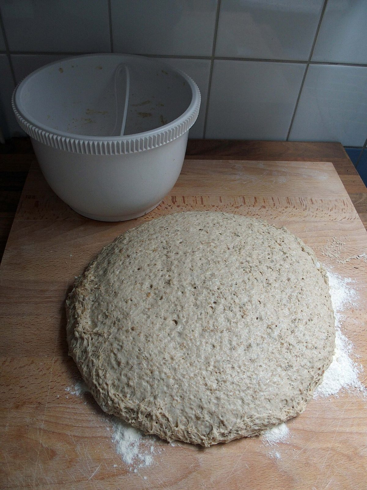

パンのこと
酵母と小麦、それだけで焼くパン
Instagramの紹介によると、白神こだま酵母と北海道産小麦を使い、卵を使わないシンプルなパンを焼いています。投稿にはライ麦パン、バゲット、トースト、折り込み生地の菓子パン、クッキーなどが並んでいます(自動の画像説明をもとにした確認のため、実際の品ぞろえと異なる場合があります)。
その日の品ぞろえ・価格は準備中です。最新の販売情報はInstagramをご覧ください。


口コミ
お客様の声(イメージ例)
以下は制作側が作成したイメージ例で、実在のお客様の声ではありません。
噛むほどに小麦の味がして、毎日食べても飽きないパンでした。
卵なしのやさしい味。小さなお店で、焼き上がりの香りがうれしい。
営業日を確認して出かけました。売り切れる前に行けてよかったです。
お店のこと
ひとりで焼く、極小のパン屋
- 店主ひとりで営む、小さなパン屋(Instagramの紹介より)
- 白神こだま酵母と北海道産小麦を使用
- 卵を使わない、シンプルなパン
- 営業日は不定期(土曜・日曜が多い様子)。Instagramの紹介では11:00〜18:00、売り切れ次第終了
- Instagramのハイライトに「10周年」の記載あり
お店のはじまりや屋号の意味は確認できていないため、ここでは触れません。パンの様子はInstagramでご確認ください。




アクセス
お店の場所と営業日
| 所在地 | 〒012-0845 秋田県湯沢市材木町2丁目2-39 |
|---|---|
| 電話 | 準備中 |
| 営業日 | 不定期(最新の営業日はInstagramで) |
| 営業時間 | Instagramの紹介では11:00〜18:00・売り切れ次第終了(詳細は準備中) |
| 定休日・駐車場 | 準備中 |
| @sora_bakery_33 |